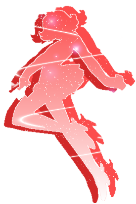

INFO
» basics
» Life
» Love
» compare
» family
» friends
» voice
» quotes
|
MEDIA
» anime
» manga
» screens
» wall
» music
» lyrics
» fanart
|
SITE
» updates
» links out
» link ODT
» credits
» contact
|

|
|

Information -- » Seiyuu
A character's personality is very much portrayed in that character's voice. The person who gives Himeno her genki yet strong-willed voice is none other than Yoshida Sayuri. :D
Yoshida Sayuri was born on March 25th. Aside from the voice role of Himeno, she has also done roles in Macross Generation, a drama series and Real Bout High School (TV) as Tamaki Nakamura. Information about her is quite hard to find, since she hasn't had very many voice roles. Aside from doing Himeno's voice, she also sings the opening theme for the series, "White Destiny." Her voice is splendid in the song, making White Destiny one of my favorite themes. ^-^ The ending theme, "Lucky Star," is also sung by her, a very cute song with a sweet tint to it. :3
Personally, I think Himeno's voice is very genki and high-pitched, fitting with her personality. Sayuri does an amazing job with Himeno's strong-willed/determined voice. Himeno does not follow the stereotypical anime girl, and this can be seen from both her personality as well as her voice.
It seems that Yoshida Sayuri sings a lot more than she does voices. Many of the Macross Generation CDs contain singles of her, and there are quite a few Macross Generation CDs. I haven't heard any of those singles, but both the opening and ending themes of Pretear are wonderful, so I wouldn't doubt her abilities on the Macross CDs.
^ top
|